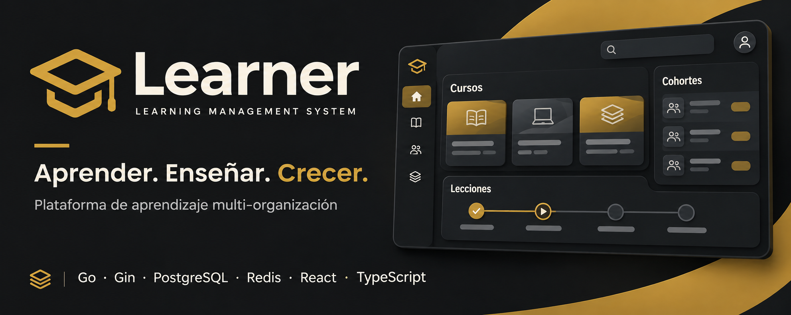

Cursos y contenidos
Construye cursos por módulos y lecciones, y publica las rutas cuando estén listas.

Un espacio para crear cursos, acompañar cohortes y evaluar el aprendizaje de forma clara y segura.
Construye cursos por módulos y lecciones, y publica las rutas cuando estén listas.
Organiza grupos de estudiantes con docentes asignados e historial de matrículas.
El alumnado avanza por las lecciones en orden y consulta su propio progreso.
Recibe intentos de actividades y revisa cada entrega con nota y retroalimentación.
En desarrollo activo. Invitaciones por correo, creación de cuentas y exportación de progreso todavía están pendientes. Consulta el alcance completo.